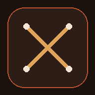

Knitting Trackers
Pick a pattern to pick up where you left off.

Dandy Neckerchief
Lace chart row tracker with stitch counts.
›
Amedeo Cardigan
Five-piece cardigan tracker with charts and finishing steps.
›
Blair Cardigan
Row tracker with lace charts, bands, and finishing steps.
›